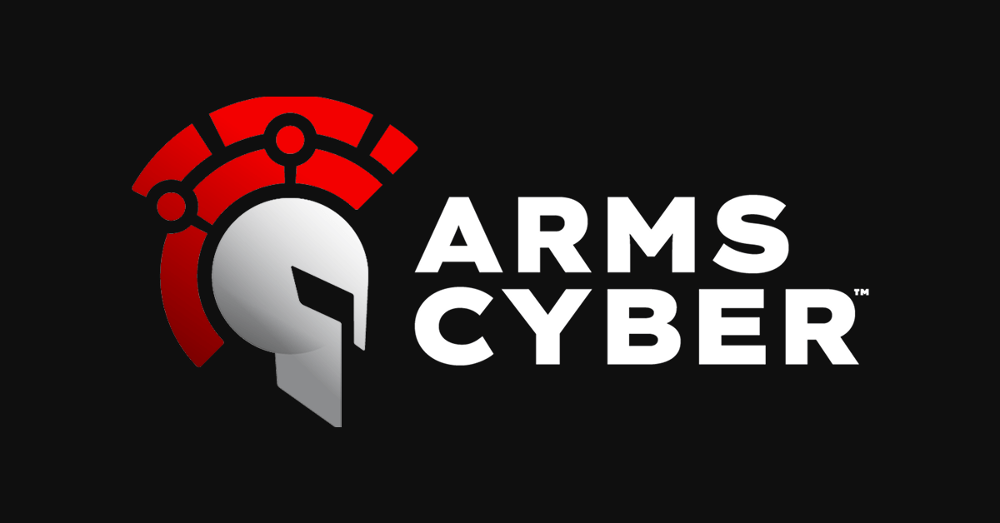

My Work Experience
Software Analyst/AI Trainer at DataAnnotation
(October 2025 - Present)
Train the AI to be smarter, more helpful, and more efficient.
- Analyze AI code/prompts/responses and help train the AI to make smarter responses.
- Create Prompts to help train the company’s AI System
- Train the AI to be smarter, more helpful, and more efficient.

Cyber Security Intern at Arms Cyber
(May-August 2024)
- Developed a Diagnostic for the company’s security service to increase productivity.
- Set up and Operated a NATS.IO Server across 3 computers.
- Developed Code in C# and operate Visual Studio.
- Collaborated and Worked with and for others.
Programs/Languages/Operating Systems used: Python, C#, Visual Studio, Visual Studio Code, Microsoft Windows.
Computer Science Intern at Arms Cyber
(July-September 2020)
- Developed a python application to correlate dependences of Linux programs.
- Used output to develop a proof of concept to demonstrate scaling exploits to thousands of
program copies around the world.
- Independently worked and coded in a work setting.
Programs/Languages/Operating Systems used: Python, Pycharm, Linux.